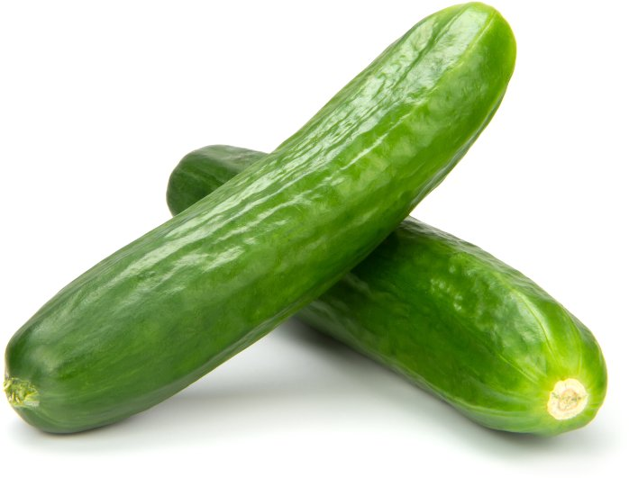
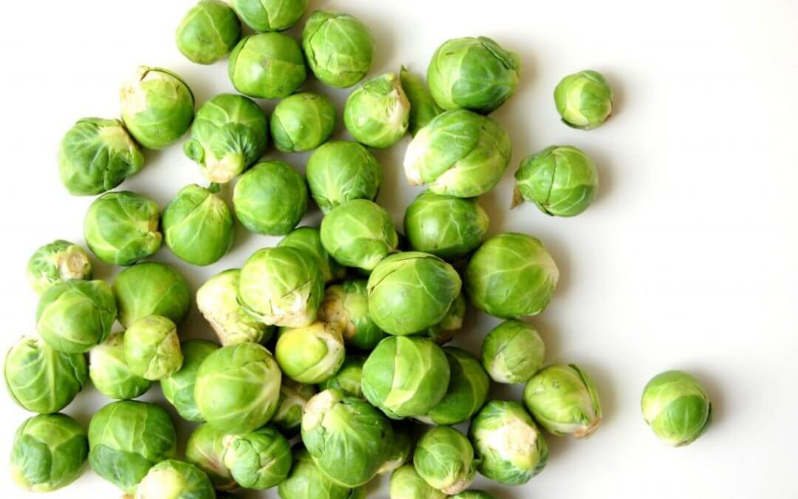
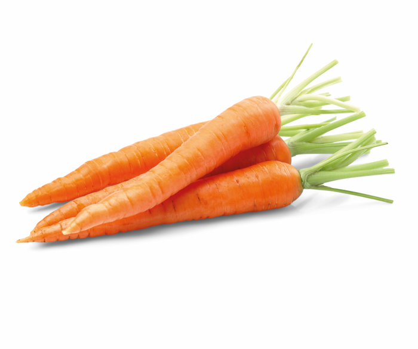
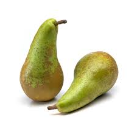
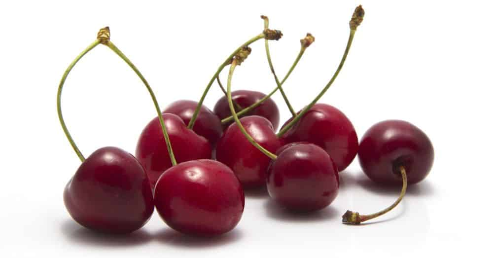
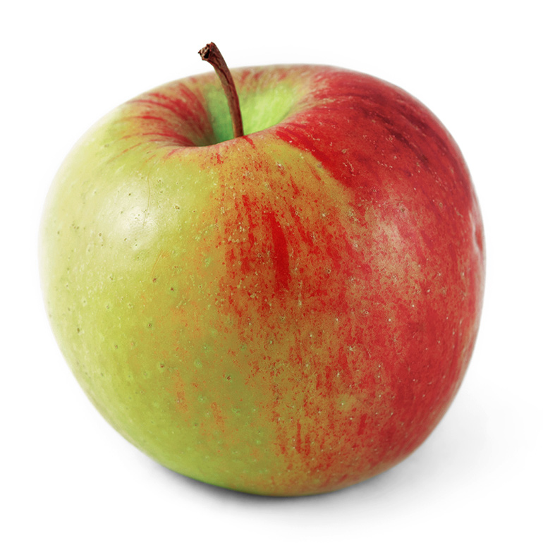
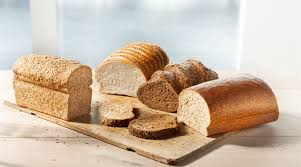
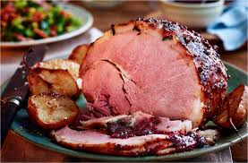
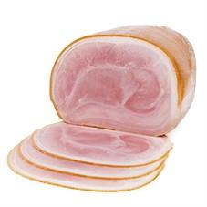

Elke dag verse groenten
Bij ons kunt u ook terect voor dagelijks verse groenten.
Elke dag verse groenten
Bij ons kunt u ook terect voor dagelijks verse groenten.

DEALS
PROFITEER NU VAN ONZE WEKELIJKSE DEALS
1+1 OP ALLE SOORTEN BROOD
BIJ AANKOOP VAN 2 KOMKOMMERS KRIJGT U EEN GRATIS VERSHOUDBAKJE CADEAU
NU 25% KORTING OP KERSEN (vanaf 500GR)
GROENTE

Verse Komkommer
Prijs : €1.- per stuk
Qty:

Brusselse Spruiten
Prijs : €1,69 per 100 Gram
Qty:

Rode Paprika
Prijs : €1.50 per stuk
Qty:

Wortel
Prijs : €1.30 per zak (500 gram)
Qty:
FRUIT

Peren
Prijs : €2,09 per zak (1 kilogram)
Qty:

Kersen
Prijs : €1,99 per bakje (500 Gram)
Qty:

sinaasappels
Prijs : €2,99 per net (2 kilogram)
Qty:

Appels
Prijs :€2.99 per zak (1 kilogram)
Qty:
BROOD & BELEG

Verschillende soorten brood
Prijs : €2,09 per zak (1 kilogram)
Soort:
Qty:

Roasted ham
Prijs : €2,86 (ca 110 Gram)
Qty:

Jonge kaas
Prijs : €2,99 (400 gram)
Qty:

Yorkham
Prijs :€2.29 (ca 110 gram)
Qty: